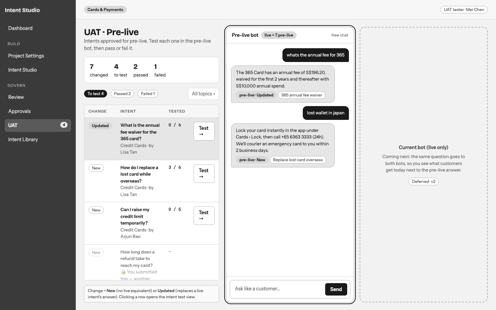
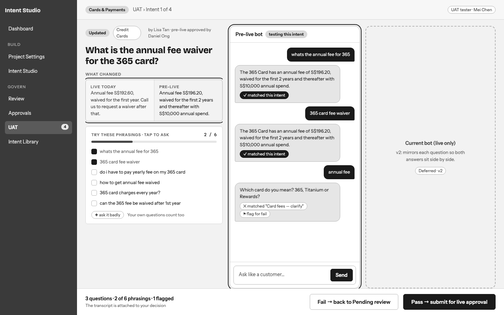
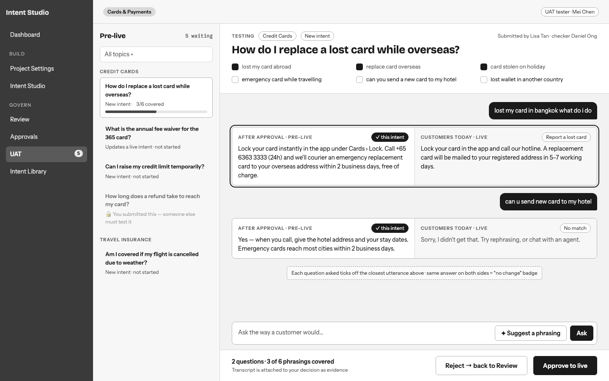
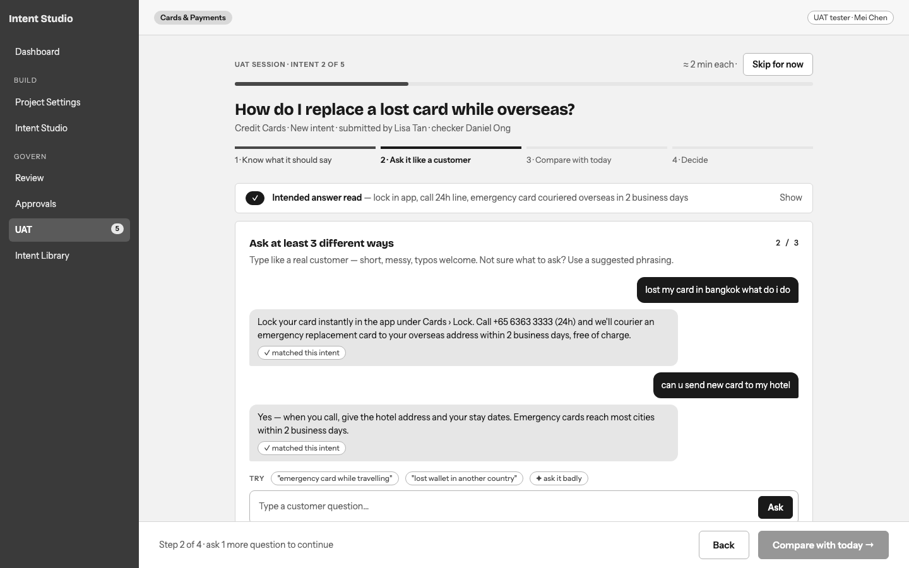
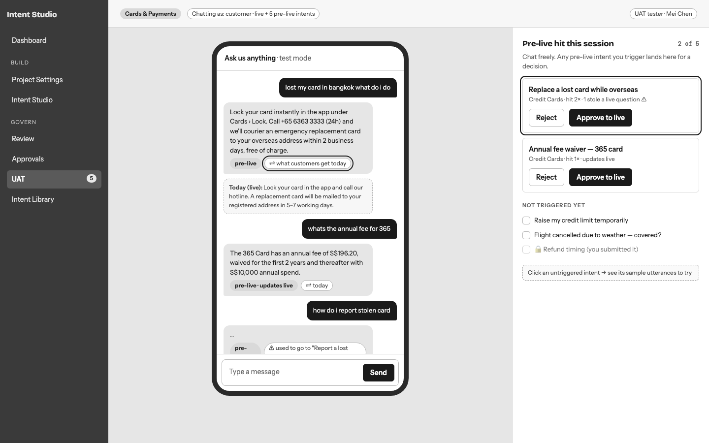
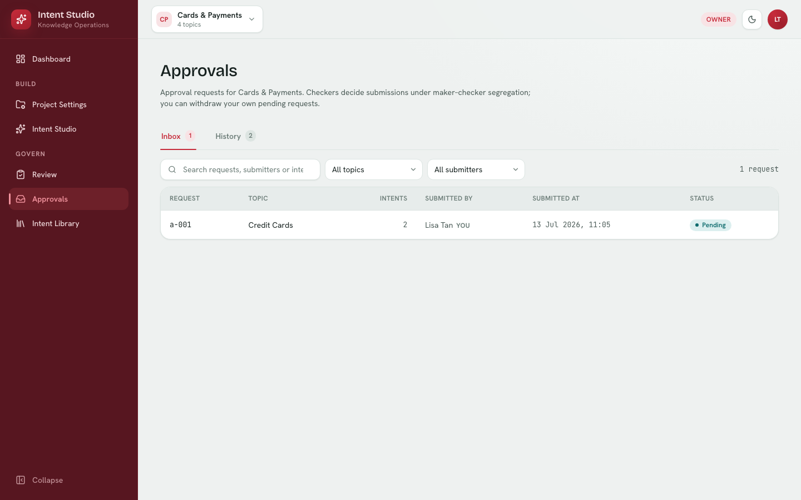

Grey wireframes, no styling yet: the question is the shape of the work, not the look. All three use the same content and the same signature (live vs pre-live comparison). Click a screenshot to open the full wireframe. Your current Approvals screen is at the bottom for reference.
Model: a list of intents that changed in pre-live (New or Updated) next to a free-chat pre-live bot. Click an intent to test it: you see what changed (live today vs pre-live), phrasings to tap and ask, then Pass → submit for live approval or Fail → back to Pending review. The current (live-only) bot is set aside for v2, and its slot is kept in the layout.


Model: queue on the left, aim at one intent, chat in the middle. Every question you ask returns after approval vs customers today side by side; the utterance checklist fills as you go; the decision bar is always visible.
Optimises for: speed and control. Testers jump freely between intents. Best for repeat testers clearing a queue.

Model: one intent at a time, four steps: know what it should say → ask it 3 ways → compare with today → decide. Then it automatically moves to the next intent.
Optimises for: first-time and non-technical testers. Hard to do it wrong, and the evidence is consistent. Costs a few more clicks for experienced testers.

Model: a replica of the real chatbot widget. You chat freely like a customer across live and all pre-live intents. Pre-live answers are tagged, with a "what customers get today" flip. Every pre-live intent you trigger lands in a tray for approve or reject.
Optimises for: realism and catching collisions, such as a new intent taking a question that a live one used to answer. The weak point: there's no aiming, so some intents may never get tested.

